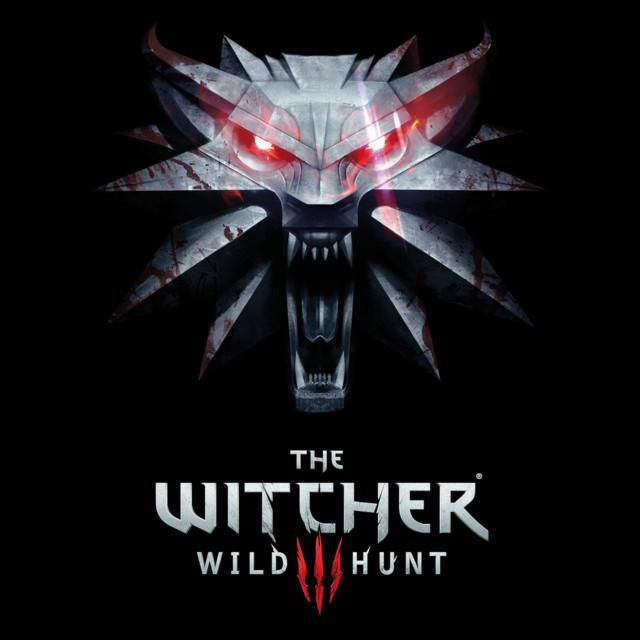
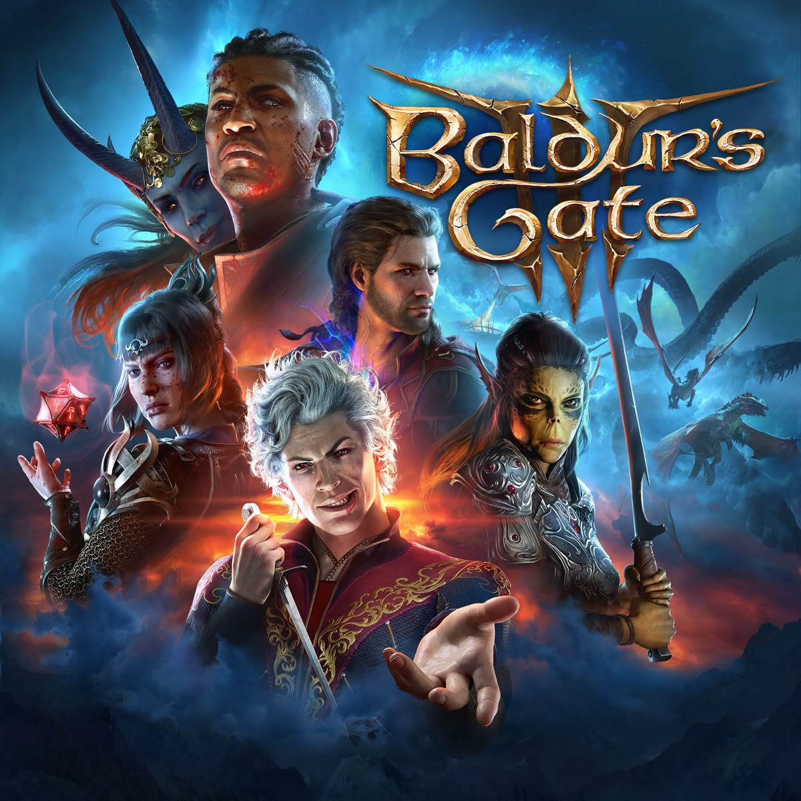
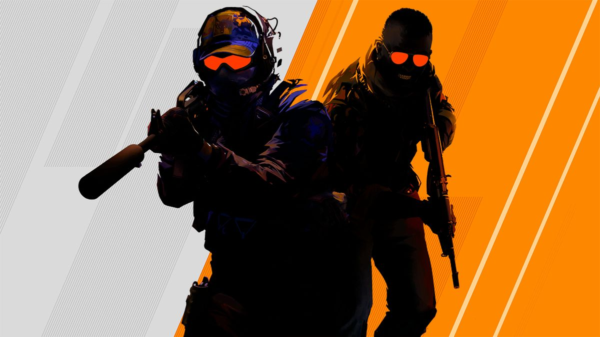

Ласкаво просимо до каталогу ігор! Тут зібрані найкращі ігри за жанрами. Натисніть на назву для отримання детальної інформації.
Перейти до: RPG ігри | FPS ігри | Стратегії | Головна сторінка | Революція 3D (1990-ті)
Рольові ігри дозволяють гравцям створювати власних персонажів та занурюватися у епічні пригоди з розгалуженими сюжетами та великим відкритим світом.

(Зображення збільшено в 2 рази — натисніть для перегляду повного розміру)
CD Projekt RED створили один із найкращих RPG-проєктів в історії. Гравець керує Геральтом з Рівії у пошуках своєї вихованки.

Larian Studios повернули класичні RPG на новий рівень. Гра отримала найвищі оцінки критиків у 2023 році.
Шутери від першої особи — один із найпопулярніших жанрів. Вони пропонують динамічний геймплей та змагання з іншими гравцями.

Valve оновили легендарний шутер на двигуні Source 2.
Стратегічні ігри вимагають логічного мислення, планування та ефективного управління ресурсами.
Покрокова стратегія, де ви будуєте цивілізацію від давніх часів до космічної ери.